序章 五月花
在从前无人来到的地方，我们希望移植一个民族。
1620年11月11日，
当太阳跳出大西洋的碧波，风浪也在晨雾中渐渐平静，一艘三桅帆船穿过海面，悄悄接近鳕鱼角海湾。
船上102名乘客中的一名，约翰·阿勒顿，站在船头，目光静静地落在帆船前行的方向，看着远方的陆地，不由得松了口气。
约翰转过身来，看着身后初升的朝阳，竟有了几分莫名的不舍。
约翰在兰开夏郡长大，父亲是一名律师。在约翰的印象中，他总是穿着一件黑色镶白边法袍，替贫困的农民打抱不平。
兰开夏的童年生活平静美好，却也如此短暂。约翰八岁时，他和他的父母坐上了前往荷兰莱顿的客船。
那是一个清晨，虽然已经过去了许多年了，但约翰的印象还是那样深刻，他的父亲站在船尾，静静地注视着远去的陆地。
他走近他的父亲，轻声问道：「爸爸，我们为什么要离开?」
「傻孩子，你还太小，不懂这些事情。」父亲温暖的手轻轻抚过他的头顶。
「那么，爸爸，我们还会回兰开斯特吗?」
「当然，坏蛋都被赶走以后，我们就可以回家了。」
父亲温柔地笑了，转过头，注视着那迷离在晨雾中的朝阳。
约翰十二岁时，他的父亲得了一种怪病，面色苍白，身体也逐渐消瘦下去，手帕上也常常沾上血迹。
「儿子，荷兰这个地方…….咳，对于宗教还是管得太宽了些，我们这些清教徒是少数派，那些天主教的遗老们才不容许我们存在，如果可以的话，或许你可以去新大陆避难，免得被那些遗老所害。」父亲将手放在约翰的手上，语重心长地说道，「请记住，永远不要放弃…..我们的信仰……」
父亲静静地合上双眼，渐渐没了声息。
约翰轻轻点头，眼中闪着泪花。
约翰明白，自己的父亲是一位清教徒，自己也随父亲走上了这条道路。这条道路真的正确吗?他不知道，但他明白，这是他父亲的道路，也是他自己的道路。
「好啦，在想什么呢，杰克?」托马斯·罗杰斯走到船头，轻拍约翰的肩膀，「不管怎样，就快靠岸了，大家在商量靠岸后的一些事情，快点到船舱里来吧。」
托马斯拉着约翰，走进船舱。
「以上帝的名义，阿门。我们这些以下签名的人们，都是蒙上帝恩典的大不列颠、法兰西、和爱尔兰的国王、信仰的捍卫者等等、詹姆斯的忠诚臣民。
为了上帝的荣耀，为了传扬基督徒的信仰，为了我们国王和国家的荣誉，我们飘洋过海，在弗吉尼亚北部开垦第一个居住地。我们在上帝面前、也在我们彼此面前，共同庄严签约，自愿结为一个民事治理团体，为了使上述目的得到更好的维护、实施和发展。因而，我们建立、组成、构建这样一个公正、平等的法律、典章、法令、宪章、职事体系；这应当是适当、必要、方便、时时更新的，并是为了居住地全体人民的公共益处；对此，我们都承诺遵守和服从。
据此见证，我们在此签名于科德角，11月11日，于英格兰、法兰西、爱尔兰十八世国王暨苏格兰五十四世国王之詹姆斯的统治之下，于基督纪年1620年。」
说着，起草公约的人郑重地将自己的名字——约翰·卡夫写在纸上。旁边的人也接二连三地开始在纸上签字。
「建立一个……民事治理团体?」约翰看着托马斯，低声问道。
「弗吉尼亚殖民公司不准我们在这里居住，所以……就只能自己管自己了。」托马斯看着他，解释说道。
「那么，既然大家都签了，咱们也把名字写上去吧。」约翰看见纸上已经写满了名字，也赶过去在纸上写下自己的名字。
「好吧，就听你的。」托马斯也赶过来，连忙签了个字。
「啊，新大陆，就是这里了，不会错的。」下船后，约翰在风中缓缓登上一块岩石，望着远处在白云中躲闪的太阳，久久无言。
第一任 奥利弗·塔尔博特
(1626.1.1-1630.1.2)
塔尔博特总督阁下，关于你让我写的关于当前形势的报告我已经写得差不多了。」一位秘书将报告轻轻放在塔尔博特的桌上，随后转身离去。
刚刚上任的奥利弗·塔尔博特轻轻翻开报告，他是十三殖民地的首任省总督，英格兰人，信仰新教，受过相当良好的行政教育，但外交和军事能力较为低下。
自上任以来，他勤于政事，未曾有片刻休息。但由于他信仰新教，饱受人民的质疑。
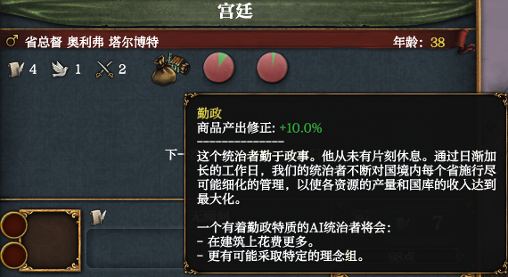
「我国当前是英格兰的王冠殖民领，有着殖民领传统，可以使我们更好地管理异端和异教徒；同时我们还有着殖民地野心，一定程度上可以提高军队的士气。」
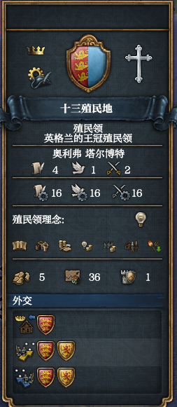
塔尔博特啜了一口咖啡——一种新大陆特有的饮品，然后继续往下读。
「尽管事情已经过去了几年，但很少有人能意识到由1618年布拉格的一扇窗户将会导致一场冲突，并且将会决定17世纪的格局。」
「东边波兰立陶宛联邦的优势地位正受到俄罗斯的挑战，同时奥斯曼帝国已经牢牢地控制住了匈牙利王国。帝国在马格里布、伊拉克、埃及以及巴尔干的边疆的战火仍未停息。」
「西班牙看起来无论在新大陆还是基督教欧洲，都占据着绝对优势，但即将同时在两地受到挑战。」
「在更遥远的东方，阿克巴大帝为他的子孙奥朗则布留下了一个繁荣兴旺且不断扩张的莫卧儿帝国。不久之后，帝国就要将几乎整个印度次大陆收入囊中。」
「在东亚，统一了满洲的女真人威胁着遭受内部动荡与自然灾害，更加混乱的明帝国。日本在德川幕府消灭了列岛上最后一个独立的大名之后，巩固了统治，进入了一段看似和平的时期。」
「总之，这是一个帝国加强中央集权的时代，一个战争与征服的时代。」
「不错不错。」塔尔博特翻到下一页，后面是有关宗教和政府的报告。
「十三殖民地信仰改革宗，改革宗的国家每月积累宗教热情，可以用宗教热情激活战争、贸易或稳定焦点。」
「共和国在每次任期(通常是4年)后，会从三位候选人中选出他们的统治者。只要你一直选举前任统治者，这个统治者将随着次数增长他的君主能力，但这同样会妨害你的共和传统。如果共和传统过低，这个国家将有变为独裁的风险。」
「先把这个任期干好吧。」塔尔博特将报告合上，开始处理各种事务。
面对原住民，塔尔博特采取了原住民镇压政策。
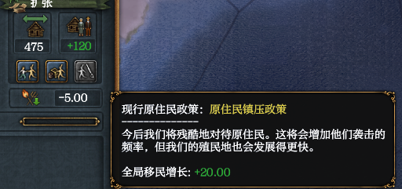
塔尔博特在一次演讲中宣布「取消所有对其他宗教的刑法，允许他们建立教会和进行公开祈祷活动，给予他们军事和内政上的权利」，这一决定被称为《宗教放任法案》。
塔尔博特在演讲中提到「虽然技术还处于起步阶段，但枪支在任何战场上都可以成为致命的武器。然而，为了提高效率，枪手们需要定期的训练和稳定的弹药供应。对于一个常规的征募军队来说，这个水平很难维持。一个不得不回家过夜的士兵并不是一个经常会用武器来锻炼的人。虽然我们不能一下子改变我们军队的结构，但是我们可以确保一支核心训练有素的高收入的军队专长这些武器。」并决定建立火枪兵团。
塔尔博特在演讲中提到「允许殖民地代表出席会议将会让我们收获更多忠良国民。」并决定颁布《纳税人选举权政策》。
塔尔博特在演讲中提到「我们的国家已经统一了度量衡，四到八牛地等于一海德，五海德相当于一个百户的小乡邑的土地。我们不是很确定。因为这不是公制单位体系，在我们最终决定在全国使用同一种基本单位前还有许多路要走。」决定颁布《统一度量衡政策》。
1626年1月22日，一位来自英格兰的使者告诉塔尔博特，英格兰已经继承了苏格兰王位，魅力与美人有时比大炮更有效，大不列颠王国成立，查尔斯一世·斯图亚特成为首任大不列颠国王。
1626年3月24日，大不列颠的官员强迫360名水手为他们的海军服役。
1626年5月1日，才能平平的将军亚历山大·戴维斯加入殖民地军队，并开始负责指挥第1军。
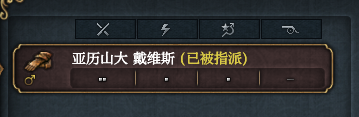
1626年5月17日，才能平平的提督约瑟夫·萨福克加入殖民地舰队，并开始指挥第1舰队。
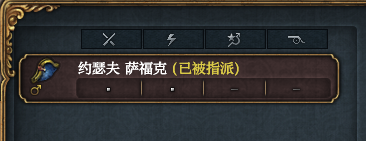
1626年5月28日，总督塔尔博特在一次演讲中提到「任何一个崛起中的国家都必须维持一支规模可观的军队。通过扩大我们的军事力量，我们既可以促进我们在国外的政治利益，也可以刺激我们的国内经济。」并提出「大规模征兵」目标：军队数量达到5,000人。
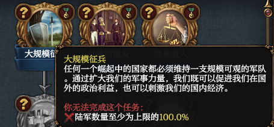
1626年7月31日，戴维斯将军报告称，「多年的和平造成了一种令人不安的状况：男子们普遍缺乏男子汉的美德。这可能是灾难性的，因为太多的新兵都已表现出了懦夫行径…….」，塔尔博特总督认为「尽管如此，我们需要他们。」继续招收新兵，致使军队纪律涣散。
1626年8月30日，塔尔博特总督宣布完成「大规模征兵」目标，国内军工一片繁荣。
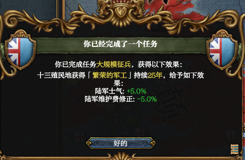
1629年9月2日，塔尔博特总督提出「世界上没有哪个国家能够崛起而不依靠盟友。我们必须与其他国家建立持久的关系，这样我们才能得到长期的发展与繁荣。」并提出「可靠的盟友」目标：同两个国家结盟，并建立良好的外交关系。
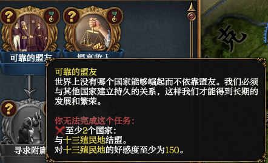
1626年9月10日，塔尔博特总督宣布十三殖民地与塔斯卡罗拉部落结为同盟。
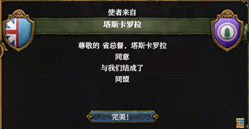
1626年9月12日，塔尔博特总督宣布十三殖民地与佩诺布斯科特部落结为同盟。
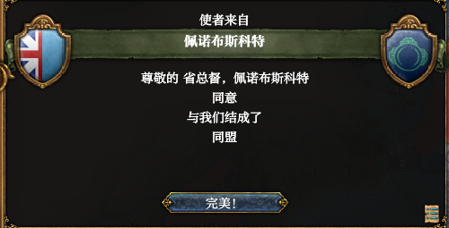
1626年10月1日，随着时间流逝，我们的故乡和殖民地之间的联系越来越弱。卡斯汀中的定居者几乎已经不与祖族联系。他们现在更愿意自称是美利坚人，这种情绪开始在整个东缅因中传播。
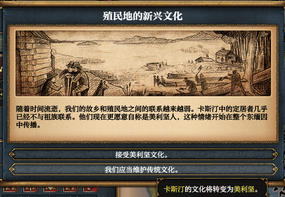
1626年10月29日，塔尔博特总督派遣亨利·弗雷德里克·克林顿作为特命全权大使前往塔斯卡罗拉部落。
1626年11月1日，塔尔博特总督派遣弗朗西斯·约克作为特命全权大使前往佩诺布斯科特部落。
1627年1月10日，塔尔博特总督宣布十三殖民地与佩诺布斯科特的联盟正式破裂。大使弗朗西斯·约克被召回。
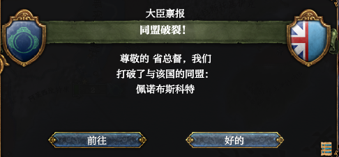
1627年5月2日，塔尔博特总督宣布十三殖民地正式接纳全球贸易思潮。
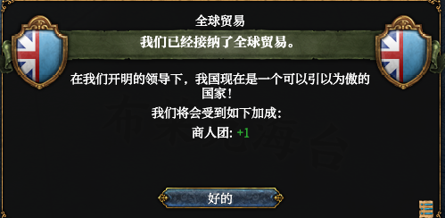
1627年5月12日，帕萨马科迪的市民向塔尔博特总督抱怨贪婪的吕贝克商队对本地造成的影响，他们坚称商队在利用不正当优势打垮本地企业。他们要求塔尔博特总督介入，去限制外商在此地的影响力，保障当地上任和工匠们的利益。塔尔博特总督认为「竞争对每个人都有益。」致使本地商人团处于劣势。
1627年5月20日，塔尔博特派遣殖民者杰里米·德·克利福德殖民诺托韦。
1630年1月22日，塔尔博特总督在诺托韦实行的军事化管理制度取得了显著成效，很明显易洛魁土著已经完全适应了塔尔博特总督治下的规矩，不敢说一个「不」字。他们他们搬离了肥沃的土地，取而代之的是最优秀的英格兰殖民者。殖民公司已经开始使用易洛魁先人们的土地，但他们要求财政给予支持。对此，塔尔博特总督表示「为了荣耀、上帝和黄金！」给予诺托韦30,000杜卡特财政拨款。
1630年5月5日，塔尔博特致力于重商主义的政策使得在外国贸易的商人的生活变得困难。塔尔博特总督表示愿意向这些商人给予支持。当日，塔尔博特总督还宣布召回驻塔斯卡罗拉大使亨利·弗雷德里克·克林顿。
1630年6月7日，塔尔博特总督派遣亨利·弗雷德里克·克林顿到波瓦坦部落建立间谍网。
1630年8月2日，一位吟游诗人越过了十三殖民地的边境，漫游了整个国家并给所有听众带去了欢乐。
1630年5月8日，托诺韦发生原住民起义，戴维斯将军率军在诺托韦战役中击败起义军。
1631年6月10日，塔尔博特总督宣布加入大不列颠对米克马克和佩科特的战争。
1632年1月21日，塔尔博特总督宣布「这个共和国已经成为共和精神、公民权利以及为共同利益奋斗只理念的捍卫者。」实施政府改革「共和主义」。
1632年2月11日，戴维斯将军向塔尔博特总督禀报，持续122日的皮克图克围攻战以十三殖民地获胜而告终，守军最终因饥荒与疾病而投降，十三殖民地现已控制了这个身份，守卫部队被允许保留旗帜与武器离开。
1632年2月26日，米克马克接受了大不列颠的和平协议，条款如下：
- 大不列颠吞并米克马克；
- 米克马克支付20,000杜卡特给大不列颠及其盟友。
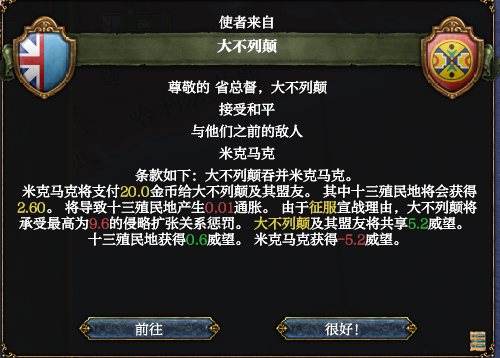
同日，塔尔博特总督宣布法兰西属加拿大为十三殖民地宿敌。
1632年7月31日，托诺韦发生原住民起义，戴维斯将军率军在诺托韦战役中击败起义军。
1632年8月19日，塔尔博特总督宣布发明了「燧发滑膛枪」，「火绳枪击发装置的最大缺点是需要保留火绳用来点燃从而完成发射。尽管簧轮枪已经出现，但因为造价过于昂贵而无法大规模配备。燧发枪的发明意味着出现了一种更可靠的武器。」
1633年1月2日，塔尔博特总督在演讲中称「国家银行应注重通胀的控制。」
1633年3月12日，塔尔博特总督宣布将在十三殖民地建立更多「大学」。「中世纪大学固然辉煌出色，但他们培养的毕业生的数量无法满足我们日益扩大的行政体系的发展需要。我们需要增加我们的大学，否则我们就会落后。」当日，塔尔博特总督颁布《建立主日学校法案》。
《建立主日学校法案》
1633年8月13日，诺托韦殖民地已经成长为城市。当日，外交官亨利·弗雷德里克·克林顿完成伪造对波瓦坦的宣称。